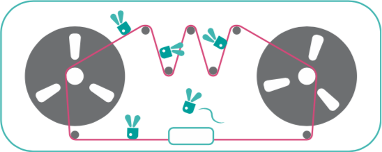
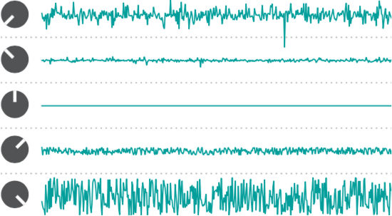

Oops!
In an older printed version of this manual, in the Patch ideas section, the > TIME parameter is incorrectly referred to as POSITION.
Installation
Beads requires a -12V/+12V power supply (2x5 pin connector). The red stripe of the ribbon cable (-12V side) must be oriented on the same side as the “Red stripe” marking on the module and on your power distribution board. The module draws 100mA from the +12V rail, and 10mA from the -12V rail.
Beads in a nutshell

One way of picturing how Beads operates is to imagine a tape loop, on which incoming audio is continuously recorded.
Every time you request a grain to be played (in reaction to a trigger, a button press, periodically, or randomly), a new replay head positions itself along the tape.
If this replay head doesn’t move, the audio will be played back at the original pitch and speed, but if it moves closer to, or further away from the record head, the signal will be replayed at a different speed and pitch. This replay head has its own amplitude envelope, and it will leave the tape once the envelope has reached a null amplitude.
Now imagine up to 30 replay heads flying along the tape. Imagine you can stop the incoming audio from being record- ed on the tape so that all these little replay heads can freely move along and gather sounds. And there’s a reverb...
Beads does not use tape, but RAM. In this manual we use computer-science terminology and refer to this virtual piece of tape as a recording buffer.
Recording quality and audio input

Recording quality is chosen with the selector button [A].

- The Cold digital setting most accurately reproduces the sonic character of the late Mutable Instruments Clouds.
- The Sunny tape setting runs the dry audio signal at a bright and clean 48kHz.
- The Scorched cassette setting emulates wow and flutter.
Beads operates in mono or stereo depending on whether one, or both, of the audio inputs (1) are patched.
When patch cables are inserted or removed, Beads monitors for five seconds the level of the incoming signal and adjusts the input gain accordingly, from +0dB to +32dB. The input level LED (2) blinks during this adjustment process. The input gain is chosen to leave some headroom, but in case of big level changes, a limiter kicks in.
One can manually restart the gain adjustment process by pressing and holding the audio quality selector button [A] for one second. Holding this button [A] while turning the feedback knob [J] allows manual gain adjustments. The manually-set gain is memorized and applied until a long press on [A] re-enables automatic gain control.
The FREEZE latching button [B] and the corresponding gate input (3) disable the recording of the incoming audio signal in the buffer. Otherwise, Beads records continuously!
If FREEZE remains engaged for more than 10 seconds, the content of the buffer is backed up, and will be restored the next time the module is powered on.
Beads will not switch between stereo and mono operation, or change the recording quality, while FREEZE is engaged.
Grain generation
Latched
Latched grain generation is enabled by holding the SEED button [C] for four seconds, or by pressing the FREEZE button [B] while the SEED button [C] is being held. This is also the default setting when the module is powered on.
The SEED button remains illuminated, and its brightness is slowly modulated to indicate that latching is enabled.
In this mode, the grains are generated continuously, at a rate set by the DENSITY knob [D] and modulated by the DENSITY CV input (5).
At 12 o’clock, no grains are generated. Turn DENSITY CW and grains will be generated at a randomly modulated rate, or CCW for a constant generation rate. The further you turn, the shorter the interval between grains, reaching at the extreme the period of a C3 note.
Clocked
When latched grain generation is enabled, and when a signal, such as a clock or sequence, is patched into the SEED input (4), the DENSITY knob [D] is repurposed as a divider or probability control. At 12 o’clock, no grains are generated. Turn CW to increase the probability (from 0% to 100%) that a grain is triggered by the external signal. Turn CCW to increase the division ratio, from 1/16 to 1.
Gated and triggered
Disable latched grain generation with a short press on the SEED button [C].
Grains will then be generated only when the SEED button is held, or when a gate signal patched in the SEED input (4) is high. The DENSITY knob [D] controls the repetition rate of grains. When DENSITY is at 12 o’clock, only a single grain will be played at each press of the SEED button, or at each trigger sent in the SEED input (4).
When grain density reaches audio rates, the DENSITY CV input (5) applies exponential FM on this rate, with a scale of 1V/octave
Grain playback control
Four parameters control at which buffer position, pitch, and with which duration and envelope the grains are replayed.
More precisely, these parameters and their respective modulations are read once, whenever a grain starts, and remain unchanged throughout the duration of the grain. If a parameter then changes, it will only impact the next grain.
For example, turning the PITCH knob will create a trail of grains with different pitches, rather than change, in lock-step, the pitch of all the grains that are currently playing.
E. TIME controls if the grain replays the most recent (fully CCW) or oldest (fully CW) audio material from the recording buffer – shifting the replay heads further apart from the record head.
F. PITCH controls the transposition, from -24 to +24 semi- tones, with virtual notches at selected intervals.
G. SIZE controls the duration and playback direction of the grain. At the 11 o’clock position, a very short (30ms) grain is played. Turn CW to increase grain duration up to 4s. Turn CCW to play a reversed grain, lasting up to 4s.
Turning SIZE fully clockwise (∞) generates never-ending grains acting as delay taps. Please refer to the Beads as a delay section.
H. SHAPE adjusts the amplitude envelope of the grain. Fully CCW creates clicky, rectangular envelopes, while fully CW provides envelopes with slow attacks reminiscent of reversed grains (Please note, however, that the envelope shape is independent of the playback direction).
I. Attenurandomizers for the TIME, SIZE, SHAPE and PITCH parameters. They control the amount of external CV modu- lation on the corresponding parameters, or repurpose the CV input (6) as a randomization or spread control.
Attenurandomizers
When a cable is patched into the corresponding CV input (6), turning the attenurandomizer [I] CW from 12 o’clock increases the amount of external CV modulation. Turning it CCW increases the amount of CV-controlled randomization.

With no CV patched into an input, the attenurandomizer controls the amount of randomization from an independent internal random source with a peaky (12 o’clock to fully CCW) or uniform (12 o’clock to fully CW) distribution. The random values from the peaky distribution are clustered towards the middle, with extreme values being infrequently generated.

Patch ideas
- Patch a ramp-down LFO, or a decaying linear envelope into the TIME CV input for "scrubbing" the buffer, or a segment of it, at whichever speed the LFO rate or envelope time is set to. Timestretching time!
- The PITCH CV input tracks V/O when the attenurandomizer is turned fully CW: one can sequence a melody of grains or even play them from a keyboard.
- Patch a fast arpeggiated sequence into the PITCH CV input to create chords: each grain will be played at a randomly chosen note of the arpeggio.
- Sequence slices of sound (or phonemes from a recording of speech) by patching the CV output of a sequencer into TIME, and its gate output into SEED.
Mixing and audio output

J. Feedback, that is to say the amount of output signal mixed with the input signal and fed back into the processing chain. Each quality setting employs a different feedback amplitude limiting scheme typical of the medium it emulates – from clean brickwall-limiting to grungy tape saturation.
K. Dry/wet balance.
L. Amount of reverb. Modeled on the acoustics of Thoreau’s cabin, or of a strip-mall spa.
The LED under each of these knobs indicates the amount of modulation they receive from the assignable CV input (7).
Press the button [M] to select to which of these 3 destinations the CV input (7) is assigned. Or hold this button and turn the knobs [J], [K] and [L] to individually adjust the amount of CV modulation.
8. Audio output. While the recording buffer can be mono or stereo, Beads’ signal processing chain is always stereo. If the R output is left unpatched, both L and R signals are summed together and sent to the L output.
If one of the grains’ parameters is randomized, or if the grains are generated at a random rate, their pan position will also be randomized.
Hold the button [M] and press the SEED button [C] to enable (or disable) the generation of a grain trigger signal on the R output. A patch cable will have to be inserted in the R output for this to work without affecting the L output!
Beads as a delay
Setting the grain SIZE [G] knob fully clockwise (∞) turns Beads into a delay or beat slicer. Effectively, only one grain remains active, forever, continuously reading from the tape.
The base delay time (and slice duration) can be manually controlled, tapped, or set by an external clock.
Manual control
If the SEED input (4) is left unpatched, and if the SEED button [C] is latched (slowly fading in and out), the delay time is freely controlled by the DENSITY knob [D] and CV input (5).
At 12 o’clock, the base delay time corresponds to the full buffer duration. Turn the knob further away to shorten the delay time up to audio rates, for flanger or comb-filtering effects. From 12 o’clock to fully CW, the delay will have an additional, unevenly spaced, tap.

Clocked or tap-tempo control
If an external clock is patched into the SEED input (4), or if you rhythmically tap the SEED button, the base delay time will be set as the interval between the taps or clock ticks.
The DENSITY knob [D] selects a subdivision of this duration. Turn the knob further away from 12 o’clock to use shorter subdivisions. From 12 o’clock to fully CCW, only binary subdivisions will be used. From 12 o’clock to fully CW, a wider variety of ratios are available.

Delaying or slicing
When FREEZE [B] is not engaged, Beads operates as a delay. The TIME knob [E] selects the actual delay time, as a multiple of the base delay time set by DENSITY and/or by the external clock or taps.
When FREEZE [B] is engaged, a slice from the recording buffer is continuously looped. The duration of a slice is equal to the base delay time. The TIME knob [E] selects which slice is played.
The SHAPE knob [H] applies a tempo-synchronized envelope on the repeats. For normal operation, turn it fully CCW.
PITCH [F] applies a classic rotary-head pitch-shifting effect on the delayed signal. At 12 o’clock, the pitch-shifter is bypassed.
Slow random LFOs are internally routed to the attenurandomizers [I].
Beads as a granular wavetable synth
When both audio inputs (1) are left unpatched, and at the end of a period of ten seconds, Beads loses patience and granularizes a collection of internally stored buffers of raw waveforms from Mutable Instruments Plaits’ wavetable model.
The feedback control [J] selects which one of these 8 banks of waveforms is played.
The dry/wet control [K] adjusts the balance between the continuous oscillator signal, and the granularized signal.
The FREEZE button [B] halts the envelope of the grains, and stops the generation of new grains.
The audio quality selector [A] selects the output resolution.

Finally, the PITCH CV input always acts as a 1 V/octave CV input affecting the root note of the grains, irrespectively of the position of the PITCH attenurandomizer.
The PITCH attenurandomizer always controls the amount of pitch randomization of the grains.
Advanced topics
Firmware update procedure
If you think your module is behaving strangely, updating the firmware is certainly not the right thing to do.
Unplug all CV inputs/outputs from the module. Connect the output of your audio interface/sound card to the IN L input (1). Set the TIME knob [E] to an intermediate position. Power on your modular system with the FREEZE illuminated push-button (B) pressed.
Make sure that no additional sound (such as email notification sounds, background music etc.) from your computer will be played during the procedure. Make sure that your speakers/monitors are not connected to your audio interface - the noises emitted during the procedure are aggressive and can harm your hearing. On non-studio audio equipment (for example the line output from a desktop computer), you might have to turn up the gain to the maximum.
When you are all set, play the firmware update file into the module. While the module receives data, the recording quality LED [A] will act as vu-meter (lit in yellow when the signal level is optimal). Try adjusting the TIME knob to adjust gain. When the end of the audio file is reached, the module automatically restarts - if it is not the case, please retry the procedure from the beginning.
In case the signal level is inadequate, all LEDs will blink in red. Press the button [B] and retry with a higher gain. If this does not help, please retry the procedure from another computer/audio interface, and make sure that no piece of equipment or software effect (equalizer, automatic gain control, FX processor) is inserted in the signal chain.